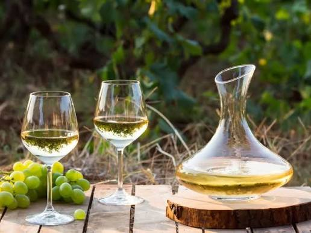

Você sabe a diferença clara entre o vinho tinto e o vinho branco (exceto pelas diferenças óbvias de cor)? Vinho tinto e vinho branco são diferentes desde o início quando estão na videira. As diferenças continuam no processo de vinificação e, como você pode imaginar, também nos perfis de sabor.
Conhecer as principais diferenças entre vinho tinto e vinho branco ajudará você a tomar decisões informadas sobre harmonização de vinho e comida, armazenamento de vinho e consumo de vinho para benefícios à saúde. Por isso, vamos aprender um pouco mais sobre vinho tinto!

Uvas brancas ou tintas: Variedades brancas famosas incluem Chardonnay, Sauvignon Blanc e Moscato. Quando o vinho branco é feito com uvas tintas (como a Pinot Noir na produção de espumantes), o processo é chamado de Blanc de Noirs (branco de tintas).
Leveduras: Transformam o açúcar natural da uva em álcool e gás carbônico. No caso dos vinhos brancos, a fermentação geralmente ocorre em temperaturas mais baixas para preservar os aromas frescos e frutados.
Compostos naturais: Possui menos taninos que o vinho tinto (pois não há contato com a casca) e destaca-se por uma maior acidez natural, o que traz a sensação de frescor na boca.
Esmagamento e Prensagem Imediata: Ao contrário do vinho tinto, as uvas são esmagadas e prensadas imediatamente para separar o suco líquido das cascas, sementes e engaços antes do início da fermentação.
Fermentação Alcoólica: O suco limpo (mosto) vai para tanques (geralmente de aço inoxidável) onde as leveduras agem apenas no líquido, garantindo que o vinho permaneça claro e sem adstringência.
Maturação e Engarrafamento: A maioria dos vinhos brancos passa por pouca ou nenhuma maturação em madeira para manter o frescor e a leveza, indo direto para a filtragem e o engarrafamento.
De um modo geral, as uvas para vinho branco são colhidas mais cedo do que as uvas para vinho tinto para preservar seus níveis de acidez. Portanto, as uvas usadas para fazer vinho tinto são mais maduras e contêm mais açúcar do que as uvas usadas para fazer vinho branco. Quanto maior o teor de açúcar das uvas na colheita, maior o potencial alcoólico de um vinho.
Assim, de um modo geral, o vinho tinto contém mais teor alcoólico do que o vinho branco. Isso significa que você pode beber mais vinho branco antes de ficar bêbado do que se bebesse vinho tinto!
O vinho tinto médio tem 3,1 gramas de teor alcoólico por copo, e o vinho branco tem 2,9 gramas por copo. Todas as garrafas de vinho são legalmente obrigadas a indicar o teor alcoólico ou ABV, álcool por volume. As vinícolas recebem um pouco de espaço de manobra, portanto, pode ser até meia porcentagem a mais do que o declarado.